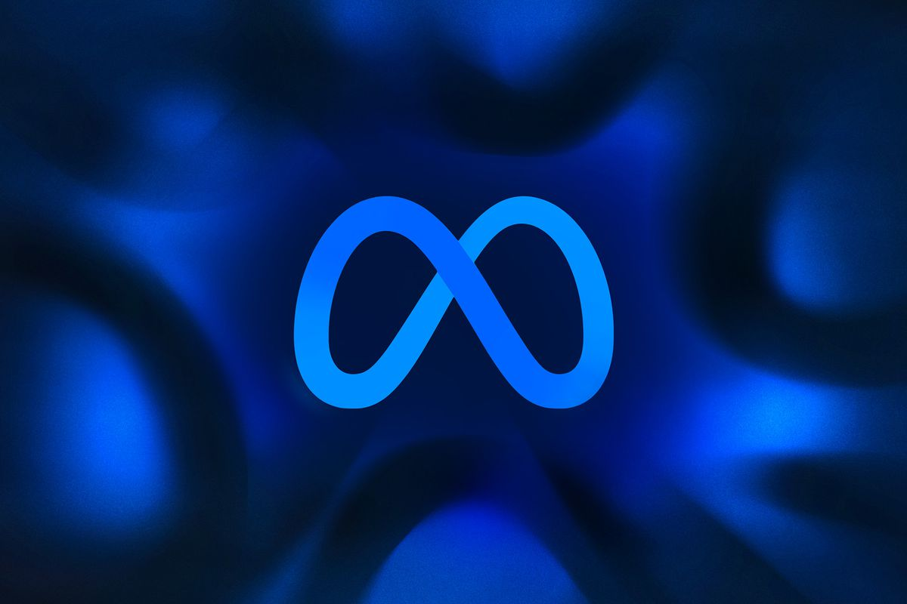

Hi.
Even though the internet is very interesting, there are many unevitable factors need further consideration. Our are lives are in fact "being programmed". You can interpret this sentence based on its literal meaning.
But, by What/Whom?


and so on.